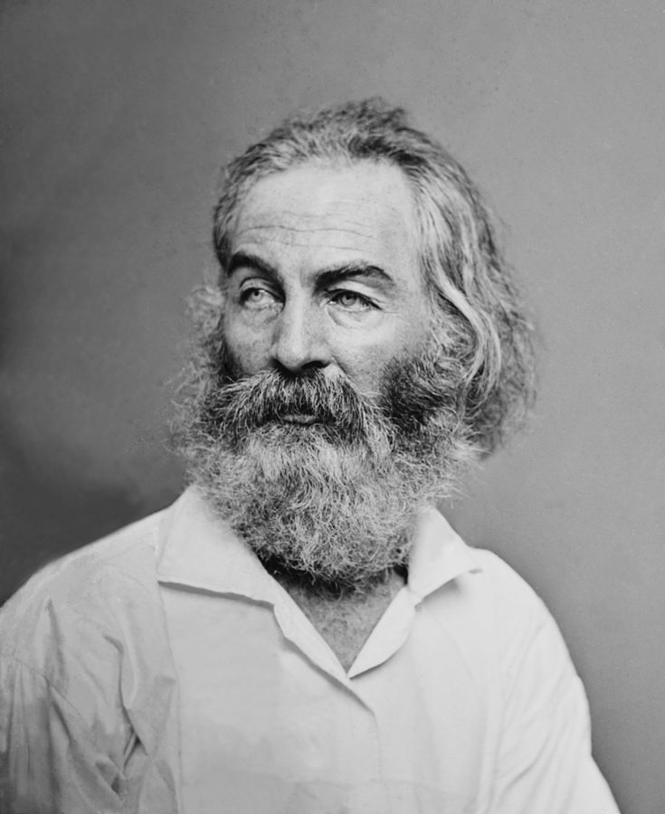

Índice
¿Quién era Walt Whitman?
 |
Walt Whitman es el poeta universal de Estados Unidos, un sucesor moderno de Homero, Virgilio, Dante y Shakespeare. En Hojas de hierba (1855, 1891-1892), celebró la democracia, la naturaleza, el amor y la amistad. Esta obra monumental cantó alabanzas tanto al cuerpo como al alma, y ??halló belleza y consuelo incluso en la muerte. Junto con Emily Dickinson , Whitman es considerado uno de los poetas estadounidenses más importantes del siglo XIX e influyó en muchos poetas posteriores, entre ellos Ezra Pound , William Carlos Williams , Allen Ginsberg , Simon Ortiz , C.K. Williams y Martín Espada. |
Primeros poemas
Whitman publicó su propia reseña entusiasta de Hojas de hierba . Sin embargo, tanto críticos como lectores encontraron inquietantes el estilo y la temática de Whitman. Según la Antología de Poesía de Longman , «Whitman recibió escaso reconocimiento público por sus poemas durante su vida por varias razones: su franqueza respecto al sexo, su autoimagen como un hombre trabajador y sus innovaciones estilísticas». Whitman, poeta que «abandonó la métrica y la rima regulares» de sus contemporáneos, se vio «influenciado por las largas cadencias y las estrategias retóricas de la poesía bíblica». Tras publicar Hojas de hierba , Whitman fue despedido de su trabajo en el Departamento del Interior.
|
Guerra Civil
 |
Durante la Guerra Civil, Whitman trabajó como oficinista en Washington D. C. Durante tres años, visitó a los soldados en su tiempo libre, curando heridas y brindando consuelo a los heridos. Estas experiencias inspiraron los poemas de su publicación de 1865, Drum-Taps , que incluye « When Lilacs Last in the Dooryard Bloom'd », la elegía de Whitman al presidente Lincoln. Tras sufrir un grave derrame cerebral en 1873, Whitman se mudó a casa de su hermano en Camden, Nueva Jersey. Si bien su poesía no logró captar la atención del público estadounidense durante su vida, más de 1000 personas asistieron a su funeral. Y como primer autor de poesía genuinamente estadounidense, el legado de Whitman perdura. |
|
Puede consultar muchos de sus libros, cartas y manuscritos en el Archivo Walt Whitman , una edición digital de la Universidad de Nebraska-Lincoln, dirigida por Ed Folsom y Kenneth M. Price. |